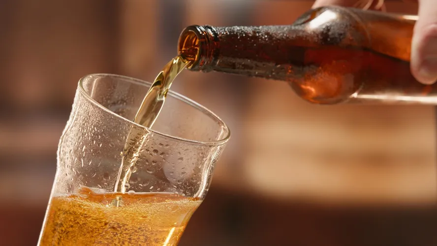

As cervejas dividem-se principalmente em duas grandes famílias conforme o tipo de fermentação:
| Família Lager | Família Ale |
|---|---|
| Fermentação baixa, com leveduras que trabalham em temperaturas mais baixas (entre 7 e 13°C). O processo de maturação é mais longo, o que resulta em uma bebida mais leve e refrescante. | Fermentação alta, com leveduras que trabalham em temperaturas mais altas (entre 15 e 24°C). O processo de maturação é mais curto, o que resulta em uma bebida mais encorpada e aromática. |
